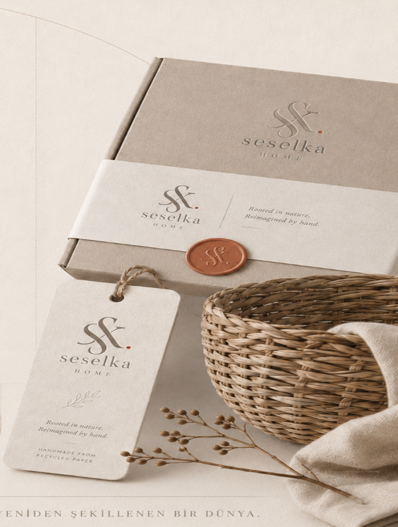
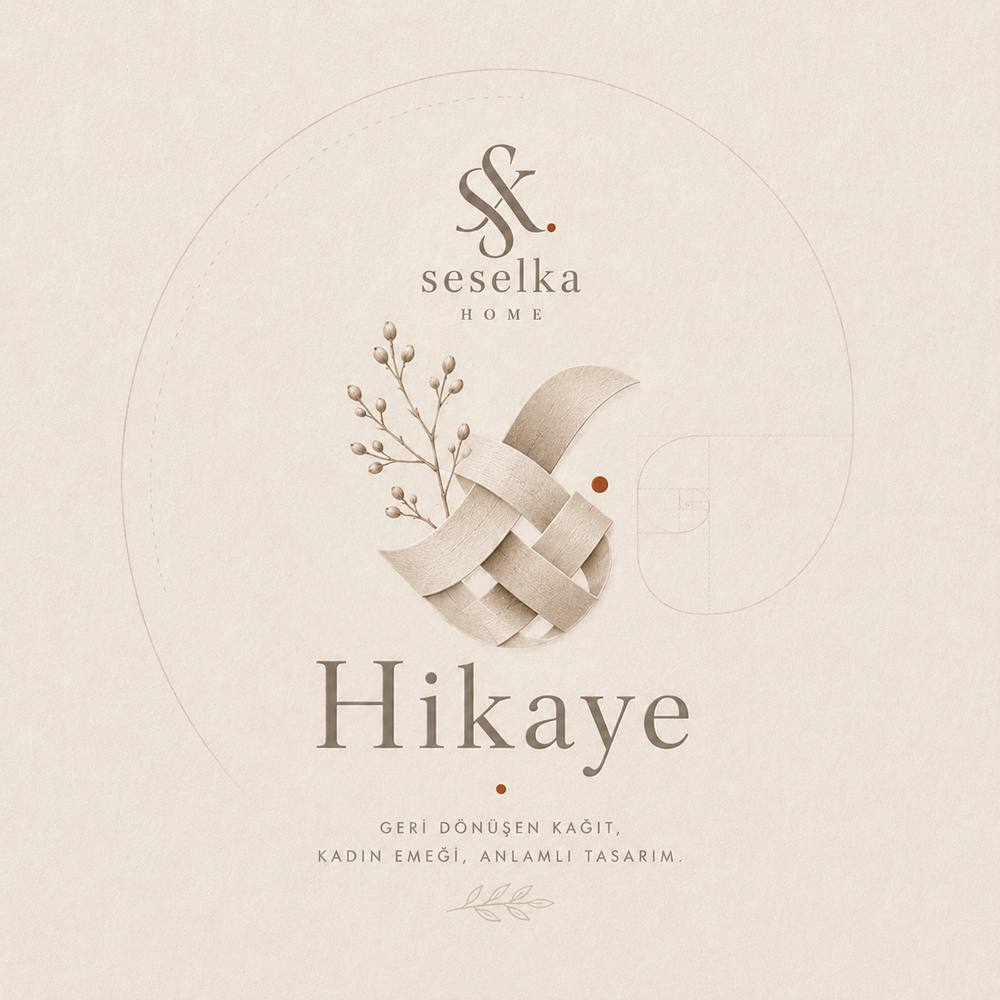
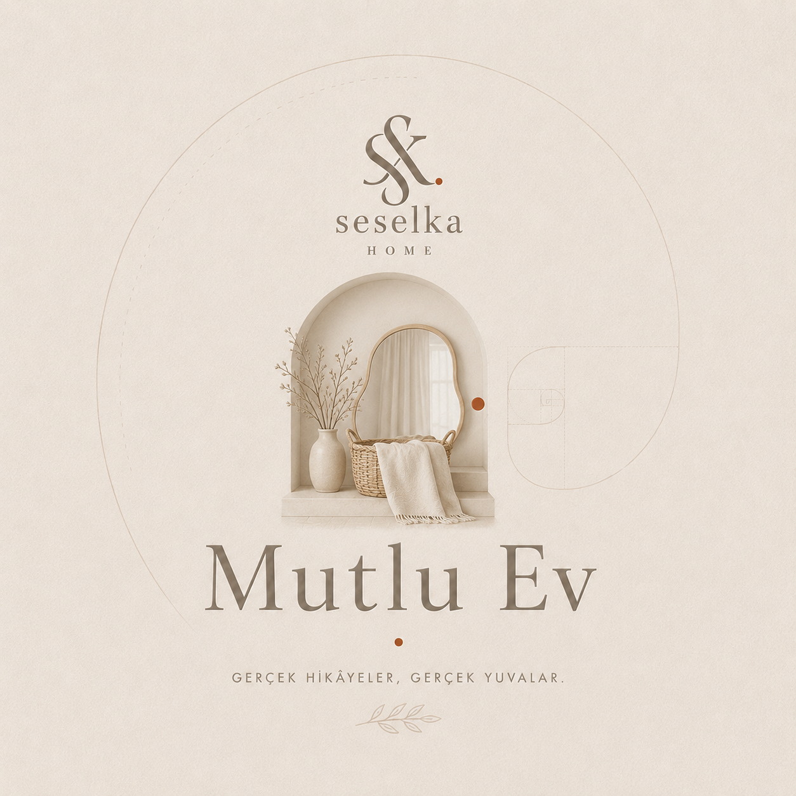
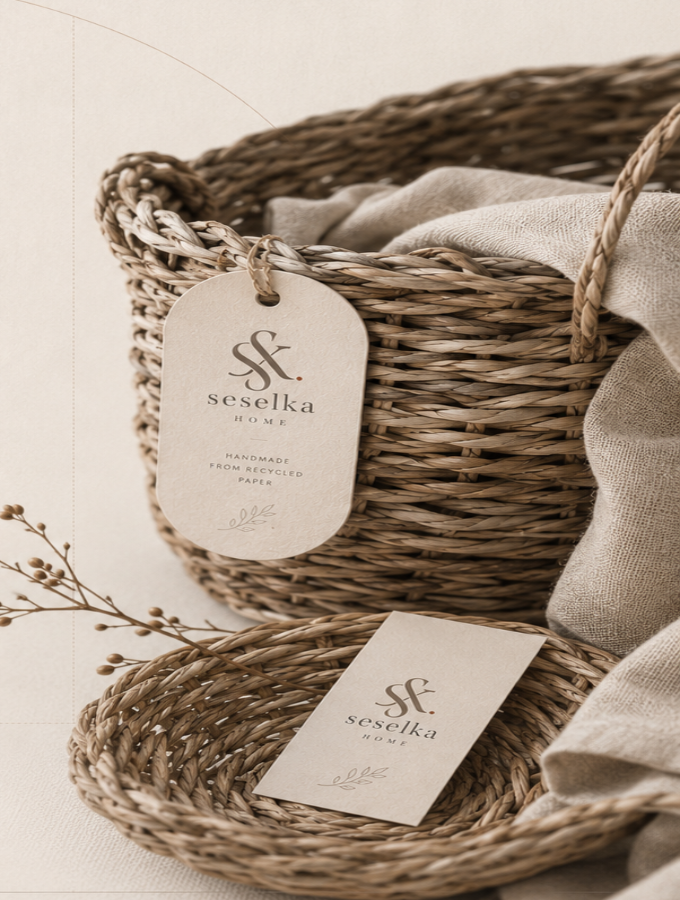
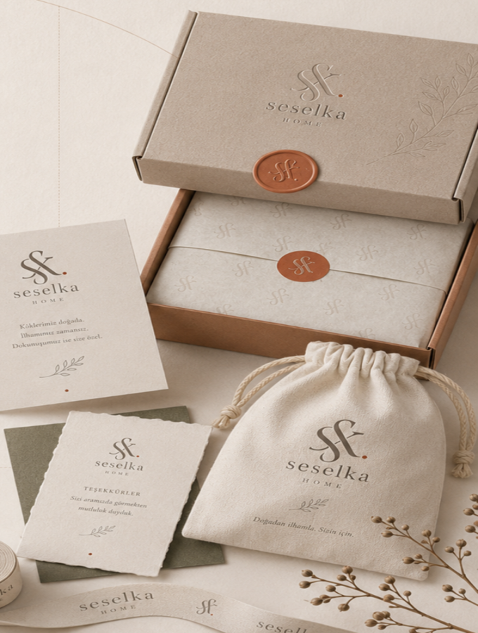

Her örgü,
bir başlangıç
Geri dönüştürülen kâğıt, bir kadın ustanın elinde örülerek gündelik yaşam için zamansız objelere dönüşür.


Doğadan ilhamla,
kadın emeğiyle
Seselka Home, atılacak kâğıdı yeniden ele alır. Her parça önce şehirden toplanır; sonra ince şeritlere kesilir, kordonlanır ve hasır geleneğinden gelen bir teknikle örülür.
Atölyede 26 kadın usta kendi temposunda çalışır. Bir sepetin tamamlanması ortalama 34 saat sürer; hiçbir parça bir diğerinin tıpatıp aynısı değildir.
Bir kâğıt, dört nefes,
bir parça
Her parça aynı dört aşamadan geçer: toplanır, kordon edilir, örülür ve mum mührüyle imzalanır.
Toplanan kâğıtları yıkar, dinlendirir ve yeniden hammaddeye çeviririz. Kullanılan suyun büyük kısmı geri kazanılır.
Kâğıt ince şeritlere kesilir, elde sıkıca bükülür; hasır gibi sağlam, doğal bir lif çıkar.
Kordonlar bir kadın ustanın elinde formuna kavuşur. Bir sepet ortalama 34 saat sürer.
Her parça mum mührü, el yazısı bir not ve geri dönüşen ambalajla yolculuğuna başlar.
Doğadan aldığını, doğanın hızında geri ver.
Atölyeden, eve
Şu anda hazır olan parçalar. Her biri elde örülmüş; üretim siparişle başlar.

Bir parça, bir oda
Seselka parçaları evinizde nasıl yaşıyor? #mutluev etiketiyle bize ulaşan, gerçek yuvalardan kareler.

Defne, İstanbul
Selin, İzmir